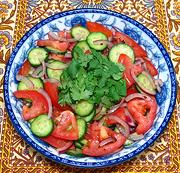

|
Cucumber Tomato SaladUzbekistan - Achchik-chuchuk | ||||
| Makes: Effort: Sched: DoAhead: |
2 # * 45+ min Best |
A simple but satisfying salad with just a little chili bite, easy to make and uses only familiar ingredients. Two pounds should make at least 5 salad servings. | |||
|
|
8 14 8 1/2 1/4 tt 2 2 ------ |
oz oz oz t t T T --- |
Cucumbers (1) Tomatoes Onion Salt Pepper black Chili Flake (2) Oil (3) Wine Vinegar, red (4) -- Garnish Cilantro |
Make - (45+ min - 15 min work)
|